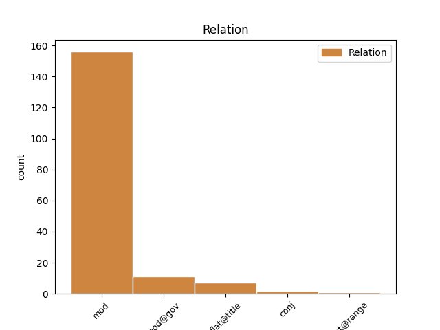
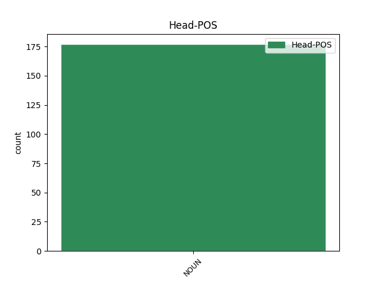
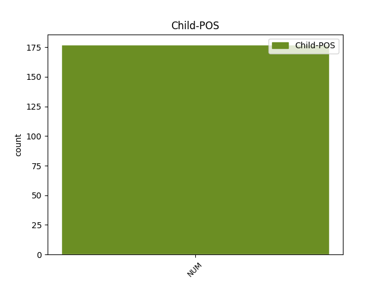

Distribution of features within this leaf



Agreement Rules sorted by frequency.
- When the dependent token is the modifer(mod) of the head token, and the head token is NOUN and the dependent token is NUM.
1 Вона _ _ _ _ 0 _ _ _
2 виявила _ _ _ _ 0 _ _ _
3 готовність _ _ _ _ 0 _ _ _
4 виплатити _ _ _ _ 0 _ _ _
5 за _ _ _ _ 0 _ _ _
6 93%-й _ _ _ _ 0 _ _ _
7 пакет _ _ _ _ 0 _ _ _
8 акцій _ _ _ _ 0 _ _ _
9 « _ _ _ _ 0 _ _ _
10 Криворіжсталі _ _ _ _ 0 _ _ _
11 » _ _ _ _ 0 _ _ _
12 24 _ _ _ _ 0 _ _ _
13 млрд _ _ _ _ 0 _ _ _
14 . _ _ _ _ 0 _ _ _
15 200 _ _ _ _ 0 _ _ _
16 млн _ _ _ _ 0 _ _ _
17 ₴ _ _ _ _ 0 _ _ _
18 . _ _ _ _ 0 _ _ _
19 ( _ _ _ _ 0 _ _ _
20 4 _ _ _ _ 0 _ _ _
21 , _ _ _ _ 0 _ _ _
22 8 _ _ _ _ 0 _ _ _
23 млрд _ _ _ _ 0 _ _ _
24 доларів _ _ _ _ 0 _ _ _
25 США _ _ _ _ 0 _ _ _
26 ) _ _ _ _ 0 _ _ _
27 , _ _ _ _ 0 _ _ _
28 що _ _ _ _ 0 _ _ _
29 в _ _ _ _ 0 _ _ _
30 2 2 NUM Mlcmsa Case=Acc|Gender=Masc|NumType=Card|Uninflect=Yes 33 mod _ Id=39m9|LTranslit=2|Translit=2
31 , _ _ _ _ 0 _ _ _
32 4 _ _ _ _ 0 _ _ _
33 рази раз NOUN Ncmpan Animacy=Inan|Case=Acc|Gender=Masc|Number=Plur 0 _ _ _
34 перевищує _ _ _ _ 0 _ _ _
35 стартову _ _ _ _ 0 _ _ _
36 ціну _ _ _ _ 0 _ _ _
37 і _ _ _ _ 0 _ _ _
38 в _ _ _ _ 0 _ _ _
39 5 _ _ _ _ 0 _ _ _
40 , _ _ _ _ 0 _ _ _
41 7 _ _ _ _ 0 _ _ _
42 рази _ _ _ _ 0 _ _ _
43 — _ _ _ _ 0 _ _ _
44 суму _ _ _ _ 0 _ _ _
45 , _ _ _ _ 0 _ _ _
46 отриману _ _ _ _ 0 _ _ _
47 за _ _ _ _ 0 _ _ _
48 підприємство _ _ _ _ 0 _ _ _
49 2004 _ _ _ _ 0 _ _ _
50 року _ _ _ _ 0 _ _ _
51 . _ _ _ _ 0 _ _ _
1 На _ _ _ _ 0 _ _ _
2 вул _ _ _ _ 0 _ _ _
3 Короленка _ _ _ _ 0 _ _ _
4 ( _ _ _ _ 0 _ _ _
5 площа _ _ _ _ 0 _ _ _
6 – _ _ _ _ 0 _ _ _
7 469 _ _ _ _ 0 _ _ _
8 кв _ _ _ _ 0 _ _ _
9 . _ _ _ _ 0 _ _ _
10 м _ _ _ _ 0 _ _ _
11 . _ _ _ _ 0 _ _ _
12 ) _ _ _ _ 0 _ _ _
13 відповідно _ _ _ _ 0 _ _ _
14 159 _ _ _ _ 0 _ _ _
15 грн _ _ _ _ 0 _ _ _
16 на _ _ _ _ 0 _ _ _
17 день _ _ _ _ 0 _ _ _
18 і _ _ _ _ 0 _ _ _
19 4761 4761 NUM Mlcfsa Case=Acc|Gender=Fem|NumType=Card|Uninflect=Yes 20 mod@gov _ Id=2raq|LTranslit=4761|Translit=4761
20 грн грн NOUN Y Abbr=Yes|Animacy=Inan|Case=Acc|Gender=Fem|Number=Sing|Uninflect=Yes 0 _ _ _
21 на _ _ _ _ 0 _ _ _
22 місяць _ _ _ _ 0 _ _ _
23 . _ _ _ _ 0 _ _ _
1 Повідомляється _ _ _ _ 0 _ _ _
2 , _ _ _ _ 0 _ _ _
3 що _ _ _ _ 0 _ _ _
4 за _ _ _ _ 0 _ _ _
5 даним _ _ _ _ 0 _ _ _
6 фактом _ _ _ _ 0 _ _ _
7 слідчим _ _ _ _ 0 _ _ _
8 відділом _ _ _ _ 0 _ _ _
9 Оболонського _ _ _ _ 0 _ _ _
10 управління _ _ _ _ 0 _ _ _
11 поліції _ _ _ _ 0 _ _ _
12 розпочато _ _ _ _ 0 _ _ _
13 кримінальне _ _ _ _ 0 _ _ _
14 провадження _ _ _ _ 0 _ _ _
15 за _ _ _ _ 0 _ _ _
16 ч ч. NOUN Y Abbr=Yes|Animacy=Inan|Case=Ins|Gender=Fem|Number=Sing|Uninflect=Yes 0 _ _ _
17 . _ _ _ _ 0 _ _ _
18 1 1 NUM Mlcfsi Case=Ins|Gender=Fem|NumType=Card|Uninflect=Yes 16 flat@title _ Id=25yk|LTranslit=1|Translit=1
19 ст _ _ _ _ 0 _ _ _
20 . _ _ _ _ 0 _ _ _
21 119 _ _ _ _ 0 _ _ _
22 ( _ _ _ _ 0 _ _ _
23 Вбивство _ _ _ _ 0 _ _ _
24 через _ _ _ _ 0 _ _ _
25 необережність _ _ _ _ 0 _ _ _
26 ) _ _ _ _ 0 _ _ _
27 Кримінального _ _ _ _ 0 _ _ _
28 кодексу _ _ _ _ 0 _ _ _
29 України _ _ _ _ 0 _ _ _
30 . _ _ _ _ 0 _ _ _
1 Нулі нуль NOUN Ncmpan Animacy=Inan|Case=Acc|Gender=Masc|Number=Plur 0 _ _ _
2 та _ _ _ _ 0 _ _ _
3 1 1 NUM Mlcmsn Case=Nom|Gender=Masc|NumType=Card|Uninflect=Yes 1 conj _ Id=165c|LTranslit=1|Translit=1
4 « _ _ _ _ 0 _ _ _
5 з _ _ _ _ 0 _ _ _
6 поведения _ _ _ _ 0 _ _ _
7 » _ _ _ _ 0 _ _ _
8 ставлять _ _ _ _ 0 _ _ _
9 часто _ _ _ _ 0 _ _ _
10 , _ _ _ _ 0 _ _ _
11 але _ _ _ _ 0 _ _ _
12 й _ _ _ _ 0 _ _ _
13 зачеркують _ _ _ _ 0 _ _ _
14 хутко _ _ _ _ 0 _ _ _
15 , _ _ _ _ 0 _ _ _
16 і _ _ _ _ 0 _ _ _
17 ніхто _ _ _ _ 0 _ _ _
18 того _ _ _ _ 0 _ _ _
19 особливо _ _ _ _ 0 _ _ _
20 не _ _ _ _ 0 _ _ _
21 боїться _ _ _ _ 0 _ _ _
22 , _ _ _ _ 0 _ _ _
23 хоч _ _ _ _ 0 _ _ _
24 не _ _ _ _ 0 _ _ _
25 раз _ _ _ _ 0 _ _ _
26 « _ _ _ _ 0 _ _ _
27 для _ _ _ _ 0 _ _ _
28 годиться _ _ _ _ 0 _ _ _
29 » _ _ _ _ 0 _ _ _
30 плачуть _ _ _ _ 0 _ _ _
31 і _ _ _ _ 0 _ _ _
32 просять _ _ _ _ 0 _ _ _
33 зачеркнути _ _ _ _ 0 _ _ _
34 . _ _ _ _ 0 _ _ _
1 Ми _ _ _ _ 0 _ _ _
2 з _ _ _ _ 0 _ _ _
3 Вами _ _ _ _ 0 _ _ _
4 нікуди _ _ _ _ 0 _ _ _
5 не _ _ _ _ 0 _ _ _
6 тислися _ _ _ _ 0 _ _ _
7 і _ _ _ _ 0 _ _ _
8 в _ _ _ _ 0 _ _ _
9 тіні _ _ _ _ 0 _ _ _
10 зоставалися _ _ _ _ 0 _ _ _
11 , _ _ _ _ 0 _ _ _
12 а _ _ _ _ 0 _ _ _
13 Савченки _ _ _ _ 0 _ _ _
14 та _ _ _ _ 0 _ _ _
15 Клими _ _ _ _ 0 _ _ _
16 Поліщуки _ _ _ _ 0 _ _ _
17 усе _ _ _ _ 0 _ _ _
18 замість _ _ _ _ 0 _ _ _
19 нас _ _ _ _ 0 _ _ _
20 випиналися _ _ _ _ 0 _ _ _
21 і _ _ _ _ 0 _ _ _
22 робили _ _ _ _ 0 _ _ _
23 літературну _ _ _ _ 0 _ _ _
24 політику _ _ _ _ 0 _ _ _
25 , _ _ _ _ 0 _ _ _
26 засновували _ _ _ _ 0 _ _ _
27 « _ _ _ _ 0 _ _ _
28 групування _ _ _ _ 0 _ _ _
29 » _ _ _ _ 0 _ _ _
30 , _ _ _ _ 0 _ _ _
31 виробляли _ _ _ _ 0 _ _ _
32 платформи _ _ _ _ 0 _ _ _
33 , _ _ _ _ 0 _ _ _
34 ідеології _ _ _ _ 0 _ _ _
35 мистецькі _ _ _ _ 0 _ _ _
36 і _ _ _ _ 0 _ _ _
37 політичні _ _ _ _ 0 _ _ _
38 , _ _ _ _ 0 _ _ _
39 все _ _ _ _ 0 _ _ _
40 , _ _ _ _ 0 _ _ _
41 що _ _ _ _ 0 _ _ _
42 через _ _ _ _ 0 _ _ _
43 рік рік NOUN Ncmsan Animacy=Inan|Case=Acc|Gender=Masc|Number=Sing 0 _ _ _
44 - _ _ _ _ 0 _ _ _
45 два два NUM Mlcmsa Case=Acc|Gender=Masc|NumType=Card 43 flat@range _ Id=1k61|LTranslit=dva|Promoted=Yes|Translit=dva
46 неминуче _ _ _ _ 0 _ _ _
47 стає _ _ _ _ 0 _ _ _
48 таким _ _ _ _ 0 _ _ _
49 же _ _ _ _ 0 _ _ _
50 трупом _ _ _ _ 0 _ _ _
51 , _ _ _ _ 0 _ _ _
52 як _ _ _ _ 0 _ _ _
53 нині _ _ _ _ 0 _ _ _
54 Семенко _ _ _ _ 0 _ _ _
55 . _ _ _ _ 0 _ _ _
Disagree Examples:
1 Це _ _ _ _ 0 _ _ _
2 , _ _ _ _ 0 _ _ _
3 думав _ _ _ _ 0 _ _ _
4 він _ _ _ _ 0 _ _ _
5 з _ _ _ _ 0 _ _ _
6 неоднозначною _ _ _ _ 0 _ _ _
7 огидою _ _ _ _ 0 _ _ _
8 — _ _ _ _ 0 _ _ _
9 це _ _ _ _ 0 _ _ _
10 був _ _ _ _ 0 _ _ _
11 Лондон _ _ _ _ 0 _ _ _
12 , _ _ _ _ 0 _ _ _
13 головне _ _ _ _ 0 _ _ _
14 місто _ _ _ _ 0 _ _ _
15 Злітно _ _ _ _ 0 _ _ _
16 - _ _ _ _ 0 _ _ _
17 посадкової _ _ _ _ 0 _ _ _
18 Смуги смуга NOUN Ncfsgn Animacy=Inan|Case=Gen|Gender=Fem|Number=Sing 0 _ _ _
19 Один один NUM Mlcmsn Case=Nom|Gender=Masc|NumType=Card 18 flat@title _ Id=0411|LTranslit=odyn|SpaceAfter=No|Translit=Odyn
20 , _ _ _ _ 0 _ _ _
21 третя _ _ _ _ 0 _ _ _
22 з _ _ _ _ 0 _ _ _
23 найбільш _ _ _ _ 0 _ _ _
24 населених _ _ _ _ 0 _ _ _
25 провінцій _ _ _ _ 0 _ _ _
26 Океанії _ _ _ _ 0 _ _ _
27 . _ _ _ _ 0 _ _ _
1 Мали _ _ _ _ 0 _ _ _
2 вже _ _ _ _ 0 _ _ _
3 таке _ _ _ _ 0 _ _ _
4 око _ _ _ _ 0 _ _ _
5 , _ _ _ _ 0 _ _ _
6 що _ _ _ _ 0 _ _ _
7 , _ _ _ _ 0 _ _ _
8 навіть _ _ _ _ 0 _ _ _
9 їдучи _ _ _ _ 0 _ _ _
10 в _ _ _ _ 0 _ _ _
11 автобусі _ _ _ _ 0 _ _ _
12 , _ _ _ _ 0 _ _ _
13 не _ _ _ _ 0 _ _ _
14 могли _ _ _ _ 0 _ _ _
15 нейтрально _ _ _ _ 0 _ _ _
16 дивитися _ _ _ _ 0 _ _ _
17 на _ _ _ _ 0 _ _ _
18 придорожні _ _ _ _ 0 _ _ _
19 ліси _ _ _ _ 0 _ _ _
20 — _ _ _ _ 0 _ _ _
21 шість _ _ _ _ 0 _ _ _
22 бук _ _ _ _ 0 _ _ _
23 два два NUM Mlcmsn Case=Nom|Gender=Masc|NumType=Card 24 mod _ Id=0tev|LTranslit=dva|Translit=dva
24 ялиця ялиця NOUN Ncfsnn Animacy=Inan|Case=Nom|Gender=Fem|Number=Sing 0 _ _ _
25 один _ _ _ _ 0 _ _ _
26 смерека _ _ _ _ 0 _ _ _
27 один _ _ _ _ 0 _ _ _
28 вільха _ _ _ _ 0 _ _ _
29 . _ _ _ _ 0 _ _ _
1 Мали _ _ _ _ 0 _ _ _
2 вже _ _ _ _ 0 _ _ _
3 таке _ _ _ _ 0 _ _ _
4 око _ _ _ _ 0 _ _ _
5 , _ _ _ _ 0 _ _ _
6 що _ _ _ _ 0 _ _ _
7 , _ _ _ _ 0 _ _ _
8 навіть _ _ _ _ 0 _ _ _
9 їдучи _ _ _ _ 0 _ _ _
10 в _ _ _ _ 0 _ _ _
11 автобусі _ _ _ _ 0 _ _ _
12 , _ _ _ _ 0 _ _ _
13 не _ _ _ _ 0 _ _ _
14 могли _ _ _ _ 0 _ _ _
15 нейтрально _ _ _ _ 0 _ _ _
16 дивитися _ _ _ _ 0 _ _ _
17 на _ _ _ _ 0 _ _ _
18 придорожні _ _ _ _ 0 _ _ _
19 ліси _ _ _ _ 0 _ _ _
20 — _ _ _ _ 0 _ _ _
21 шість _ _ _ _ 0 _ _ _
22 бук _ _ _ _ 0 _ _ _
23 два _ _ _ _ 0 _ _ _
24 ялиця _ _ _ _ 0 _ _ _
25 один один NUM Mlcmsn Case=Nom|Gender=Masc|NumType=Card 26 mod _ Id=0tex|LTranslit=odyn|Translit=odyn
26 смерека смерека NOUN Ncfsnn Animacy=Inan|Case=Nom|Gender=Fem|Number=Sing 0 _ _ _
27 один _ _ _ _ 0 _ _ _
28 вільха _ _ _ _ 0 _ _ _
29 . _ _ _ _ 0 _ _ _
1 Мали _ _ _ _ 0 _ _ _
2 вже _ _ _ _ 0 _ _ _
3 таке _ _ _ _ 0 _ _ _
4 око _ _ _ _ 0 _ _ _
5 , _ _ _ _ 0 _ _ _
6 що _ _ _ _ 0 _ _ _
7 , _ _ _ _ 0 _ _ _
8 навіть _ _ _ _ 0 _ _ _
9 їдучи _ _ _ _ 0 _ _ _
10 в _ _ _ _ 0 _ _ _
11 автобусі _ _ _ _ 0 _ _ _
12 , _ _ _ _ 0 _ _ _
13 не _ _ _ _ 0 _ _ _
14 могли _ _ _ _ 0 _ _ _
15 нейтрально _ _ _ _ 0 _ _ _
16 дивитися _ _ _ _ 0 _ _ _
17 на _ _ _ _ 0 _ _ _
18 придорожні _ _ _ _ 0 _ _ _
19 ліси _ _ _ _ 0 _ _ _
20 — _ _ _ _ 0 _ _ _
21 шість _ _ _ _ 0 _ _ _
22 бук _ _ _ _ 0 _ _ _
23 два _ _ _ _ 0 _ _ _
24 ялиця _ _ _ _ 0 _ _ _
25 один _ _ _ _ 0 _ _ _
26 смерека _ _ _ _ 0 _ _ _
27 один один NUM Mlcmsn Case=Nom|Gender=Masc|NumType=Card 28 mod _ Id=0tez|LTranslit=odyn|Translit=odyn
28 вільха вільха NOUN Ncfsnn Animacy=Inan|Case=Nom|Gender=Fem|Number=Sing 0 _ _ _
29 . _ _ _ _ 0 _ _ _
1 За _ _ _ _ 0 _ _ _
2 цим _ _ _ _ 0 _ _ _
3 фактом _ _ _ _ 0 _ _ _
4 поліція _ _ _ _ 0 _ _ _
5 розпочала _ _ _ _ 0 _ _ _
6 кримінальне _ _ _ _ 0 _ _ _
7 провадження _ _ _ _ 0 _ _ _
8 за _ _ _ _ 0 _ _ _
9 ч ч. NOUN Y Abbr=Yes|Animacy=Inan|Case=Ins|Gender=Fem|Number=Sing|Uninflect=Yes 0 _ _ _
10 . _ _ _ _ 0 _ _ _
11 1 1 NUM Mlcmsn Case=Nom|Gender=Masc|NumType=Card|Uninflect=Yes 9 flat@title _ Id=249i|LTranslit=1|Translit=1
12 ст _ _ _ _ 0 _ _ _
13 . _ _ _ _ 0 _ _ _
14 185 _ _ _ _ 0 _ _ _
15 Кримінального _ _ _ _ 0 _ _ _
16 кодексу _ _ _ _ 0 _ _ _
17 України _ _ _ _ 0 _ _ _
18 ( _ _ _ _ 0 _ _ _
19 Крадіжка _ _ _ _ 0 _ _ _
20 ) _ _ _ _ 0 _ _ _
21 , _ _ _ _ 0 _ _ _
22 - _ _ _ _ 0 _ _ _
23 повідомляє _ _ _ _ 0 _ _ _
24 Головне _ _ _ _ 0 _ _ _
25 управління _ _ _ _ 0 _ _ _
26 Національної _ _ _ _ 0 _ _ _
27 поліції _ _ _ _ 0 _ _ _
28 у _ _ _ _ 0 _ _ _
29 Закарпатській _ _ _ _ 0 _ _ _
30 області _ _ _ _ 0 _ _ _
31 . _ _ _ _ 0 _ _ _